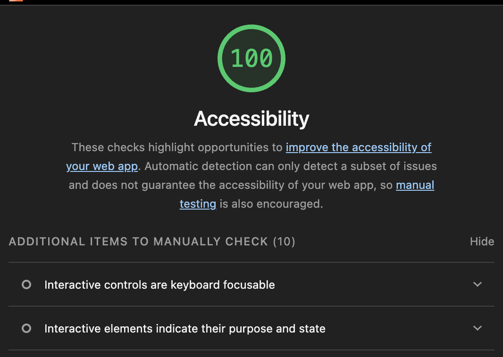

Website Accessibility Audit Report
1. Introduction
I used Google Lighthouse (Accessibility category only) to audit my Web Programming course archive: the home page and the four Week 8 pages. The first run scored between 92 and 98 out of 100. After three fixes, every page scored 100 out of 100.
| Page | Before | After | What Lighthouse reported |
|---|---|---|---|
| index.html | 92 | 100 | Insufficient color contrast |
| week8/ex_1.html | 97 | 100 | No main landmark |
| week8/ex_2.html | 97 | 100 | No main landmark |
| week8/ex_3.html | 98 | 100 | No main landmark |
| week8/task1.html | 97 | 100 | No main landmark |
2. Before the Improvements
Initial Lighthouse accessibility score for the home page: 92/100. I kept a copy of the home page from before the fixes so the audit can be repeated.

3. After the Improvements
Final Lighthouse accessibility score for the home page: 100/100.

4. Three Accessibility Improvements
Fix 1: Color Contrast
Lighthouse flagged the small tagline in the footer of the home page. Its dark gray text on a near-black background had a contrast ratio of only 2.82:1, below the WCAG AA minimum of 4.5:1 for body text. I lightened the text color, which raised the ratio to 5.78:1.
CSS before.footer-subtitle { color: #5d5858; } /* 2.82:1 - fails AA */.footer-subtitle { color: #8f8a86; } /* 5.78:1 - passes AA */Fix 2: Main Landmark
The four Week 8 pages wrapped their content in a plain <div>, so screen reader
users had no “main” region to jump to. I changed the wrapper to a
<main> element. The home page already had one, so I only gave it an id.
<div class="wrap"> ... </div><main id="main-content" class="wrap"> ... </main>Fix 3: Skip Link
I added a skip link as the first element on every page. It stays off-screen until a keyboard user presses Tab, then appears in the top-left corner. Pressing Enter moves straight to the main content, so keyboard users do not have to tab through the header first. This satisfies a WCAG Level A requirement.
HTML<a href="#main-content" class="skip-link">Skip to main content</a>.skip-link { position: absolute; left: -9999px; }
.skip-link:focus { left: 0.5rem; top: 0.5rem; }5. Conclusion
These three fixes make the site easier to use with a keyboard and a screen reader, and easier to read for people with low vision. The Lighthouse accessibility score rose to 100 out of 100 on all five pages I audited. As a bonus, adding a meta description to each page also raised the SEO score from 90 to 100.